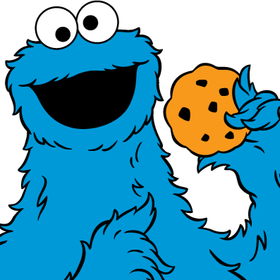
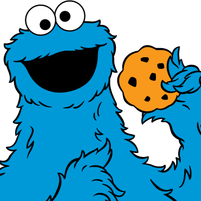

Амномномнамном
 

Надеюсь, ты принес мне еще печенек? Хрюня говорила, что ты зайдешь...но не думай, что я так легко "открою"
тебе свой богатый внутренний мир...
Сначала, подбери ключик к моему сердечку ❤
Во-первых, ты должен перевести один вид символов в другой, что очевидно.
Во-вторых, понять, что обозначают эти символы и дополнить их
последовательность одним недостающим.
В-третьих, полный комплект символов перевести в третий - числовой,
чтобы одолеть меня.
И, наконец, на последнем этапе выбрать из всего количества цифр только
однозначные - это и будет пароль. Его нужно набрать в логической последовательности второго вида символов.
Кстати, знаешь какая сладость моя любимая после печенек? - скитлз